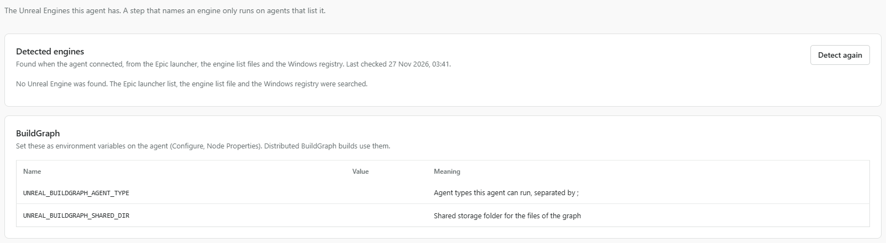
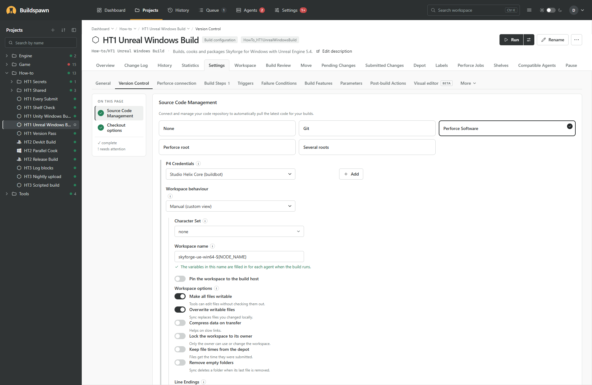
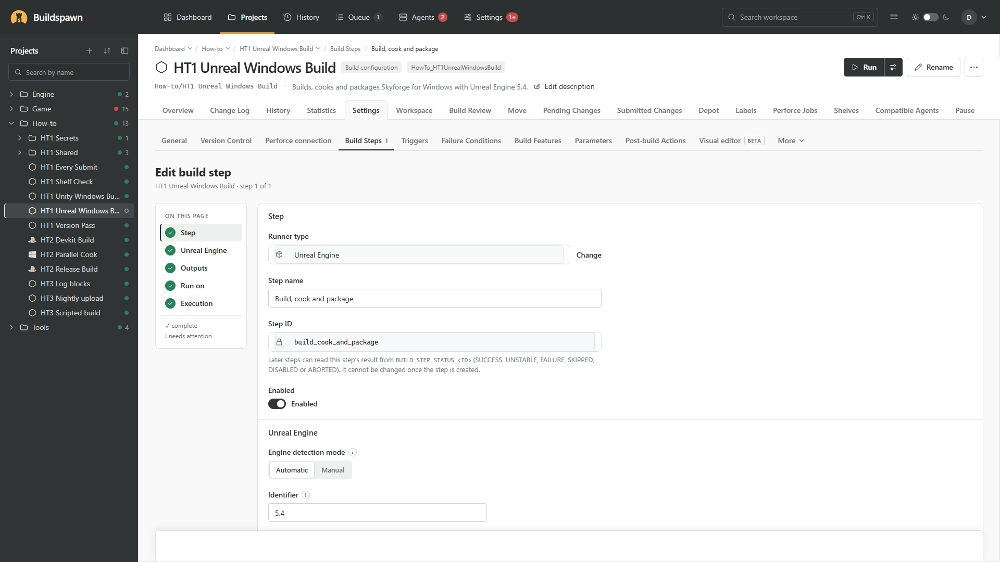
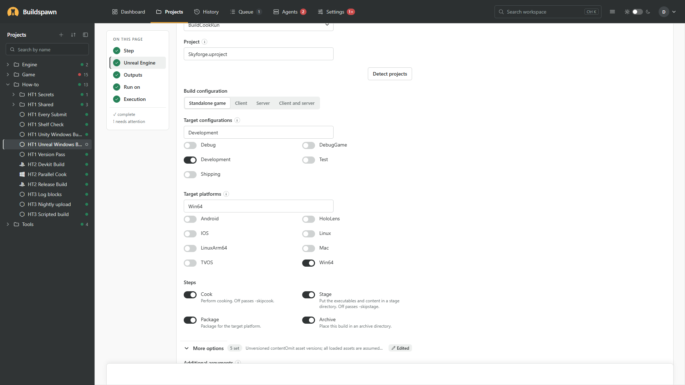
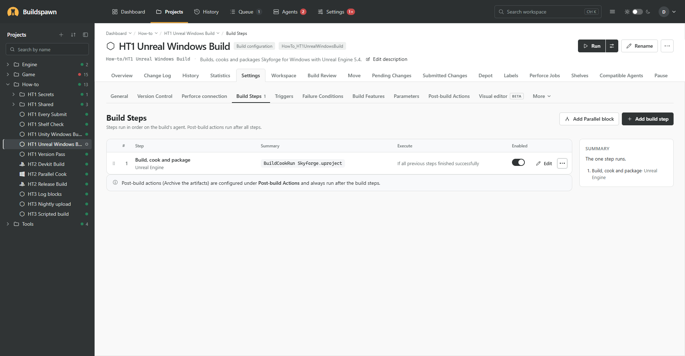
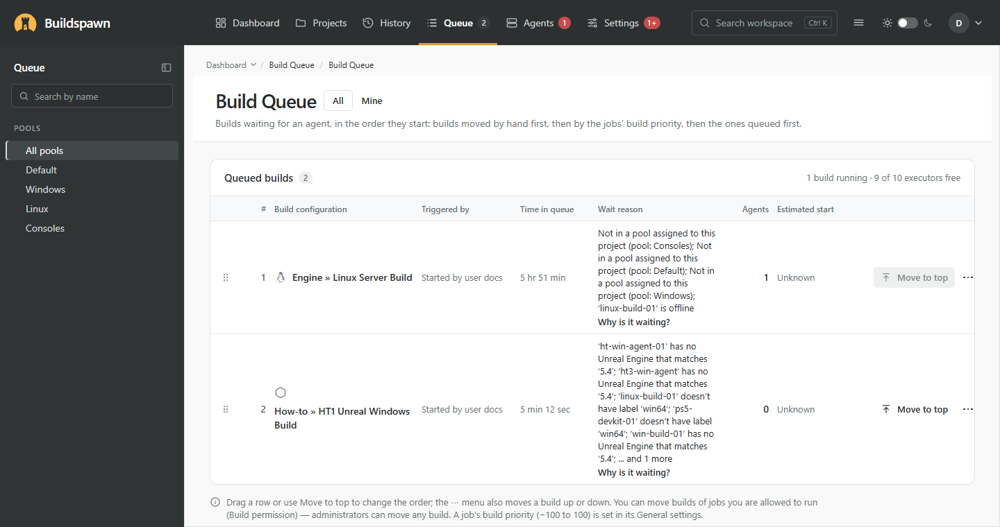

Build an Unreal Engine game from Perforce
Sync your game from a Perforce depot, then compile, cook and package it for Windows with one Unreal Engine step.
Before you start
- A project to hold the build configuration, for example Game. See Projects.
- A Perforce connection: the server address and a build user with its password or ticket. If nobody has added one yet, you add it in step 4.
- The depot path of your game, for example
//depot/skyforge/..., and the name of its.uprojectfile. - A Windows agent with Unreal Engine installed, from the Epic launcher or built from source. Buildspawn looks for engines when the agent connects. Open the agent and click the Unreal Engines tab to see what it found.

Steps
Create the build configuration
- Open your project and click New Item.
- Type a name, for example
Windows Build, choose Freestyle project and click OK. The build configuration opens on its Settings tab.
Connect it to Perforce
- Click Version Control and choose Perforce Software.
- Under P4 Credentials, pick your studio's connection, for example Studio Helix Core (buildbot). If there is none, click Add and fill in the server (
ssl:perforce.studio.example:1666), the user and the password or ticket. - Set Workspace behaviour to Manual (custom view).
- In Workspace name, type a name for the Perforce workspace that ends with the agent's name, for example
skyforge-ue-win64-${NODE_NAME}. Each agent then gets its own workspace. - In View Mappings, map the depot into that workspace:
//depot/skyforge/... //skyforge-ue-win64-${NODE_NAME}/... - Under Populate options, choose Auto cleanup and sync. It syncs only what changed and removes files that should not be there, such as old build output.
- Click Save.

If your depot uses streams, choose Streams as the workspace behaviour and type the stream, for example //skyforge/main. Buildspawn writes the view for you. See Perforce.
Add the Unreal Engine step
- Click Build Steps, then Add build step.
- Type
Unrealin Filter step types and click the Unreal Engine tile. - In Step name, type
Build, cook and package. - Leave Engine detection mode on Automatic and type the engine version in Identifier, for example
5.4. The step then runs only on agents that have that engine. For an engine in a folder of your own, choose Manual and fill in Root dir instead. - Leave Command on BuildCookRun.
- In Project, type the path of the
.uprojectfile in the workspace, for exampleSkyforge.uproject. After a first build, Detect projects finds it for you.

- Leave Build configuration on Standalone game.
- Under Target configurations, tick Development. Under Target platforms, tick Win64. To build more than one, tick more boxes; the field joins them with
+. - Keep Cook, Stage, Package and Archive ticked. Open Advanced and set the Archive directory to
Output. - Leave Additional arguments as they are. They make the engine run without windows or prompts on a build machine.
- Click Save.

Keep the package and run it
- Open More › Post-build Actions, add Archive the artifacts and type
Output/**in Files to archive. Click Save. - Click Run.

Check it worked
- The build log starts with the Perforce sync into
skyforge-ue-win64-plus the agent's name, then [Step 1/1] Build, cook and package. - Errors and warnings from the engine are picked out of the log for you. See The build console.
- The Changes tab of the build lists the changelists since the last build.
- The package is under Artifacts on the build page.
The demo server used for this guide has no Unreal Engine on its agents, so the screenshots stop at the settings and at the queue below. On a machine with the engine, the same settings run the full build.
Troubleshooting
The build waits in the queue
Open Queue and read the Wait reason. has no Unreal Engine that matches '5.4' means no online agent reported that engine. Check the agent's Unreal Engines tab and click Detect again after you install the engine, or change the Identifier to a version the agent has.

Two agents fight over one workspace
A Perforce workspace belongs to one machine. If the Workspace name has no ${NODE_NAME}, two agents use the same workspace and sync files they don't have. Put ${NODE_NAME} in both the name and the right side of the view.
The step can't find the project
The Project path is relative to the workspace. If the game is in a subfolder of the depot, include it, for example Games/Skyforge/Skyforge.uproject. Click Detect projects to list the .uproject files of the last workspace.
The sync fails with a password error
The connection's password or ticket is wrong or expired. Buildspawn shows the problem on the build configuration page and in its settings. Update the connection on the Credentials page where it was added: the project's, or the server's under Settings.